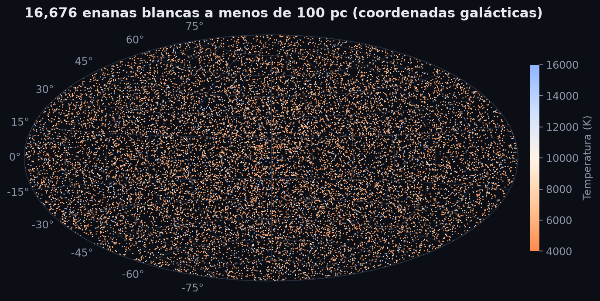
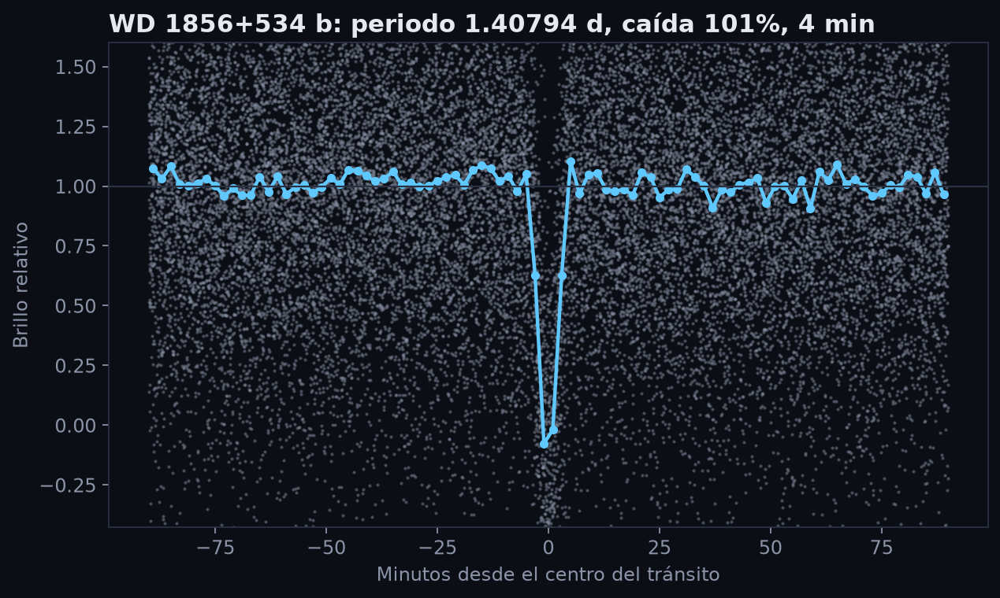
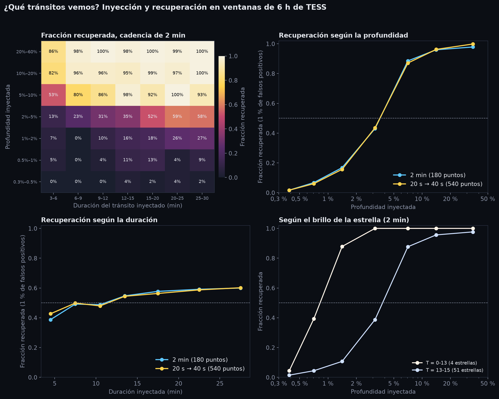
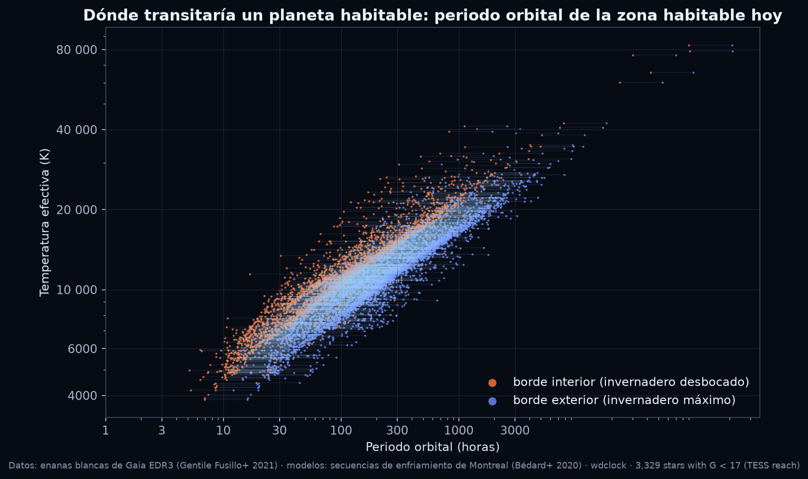
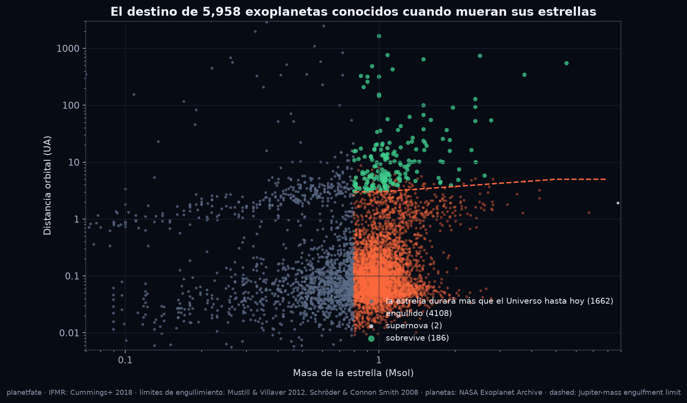
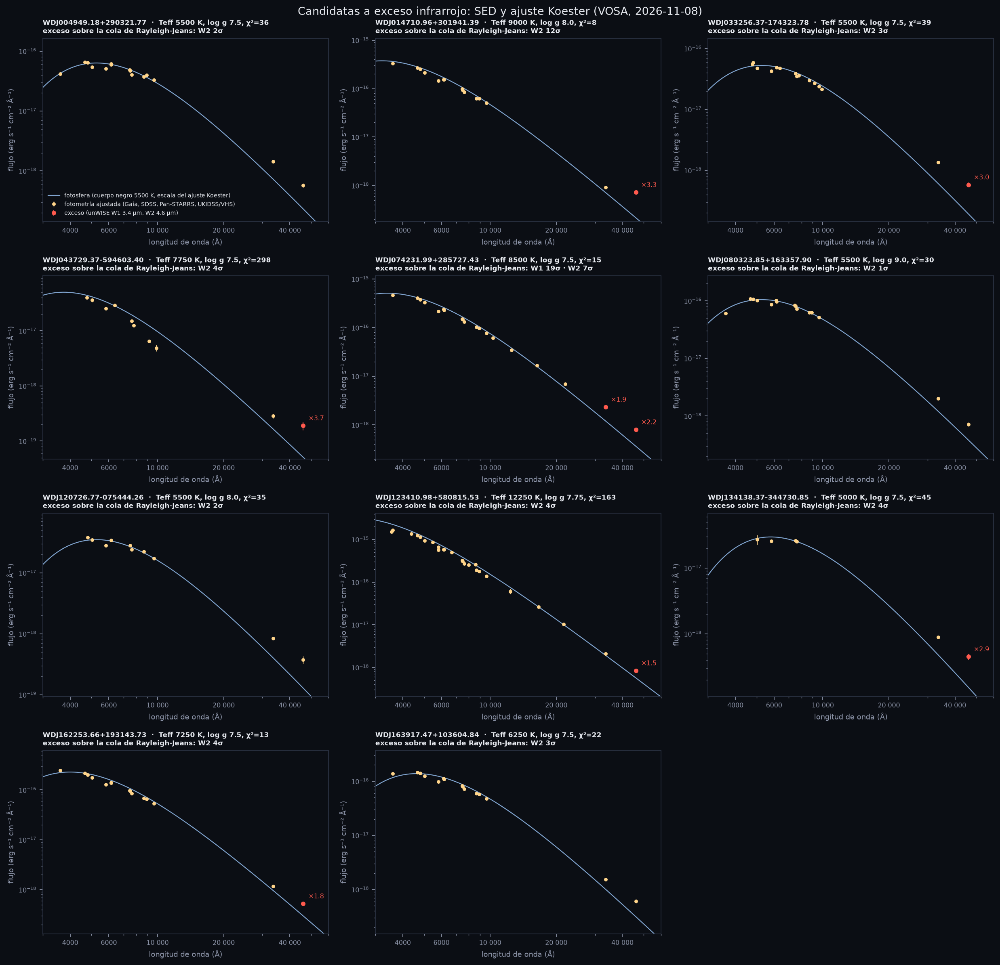

We search public archival data for planets and planetary debris that cross white dwarfs, the
Earth-sized remnants of stars like the Sun. This is our open research notebook: every report, vetting record,
negative result and correction.
Christian Jair · Kister Space · citizen science, not peer reviewed ·
GitHub repository ·
videos · updated 12 November 2026
16,676white dwarfs within 100 pc (Gaia EDR3)
3,339bright enough for TESS (G < 17)
1,347processed by our transit search so far
0new transiting planets or debris found so far

The sample. Every high-confidence white dwarf within 100 pc in the Gaia EDR3 catalogue of
Gentile Fusillo et al. (2021). Labels are in Spanish, as in our working dashboard.
Why minutes matter
A white dwarf is about the size of the Earth, so a planet crossing it can block most of its light, but only
for 2 to 8 minutes. TESS's 20-second light curves resolve such a transit; searches tuned for hour-long events
miss it. Only one planet is known to transit a white dwarf, WD 1856+534 b (Vanderburg et al. 2020), and our
pipeline finds it blind.

Validation. WD 1856+534 b recovered by our search: period 1.40794 d. The apparent depth of
about 100 % is not physical; the TESS crowding correction over-scales it because two neighbours share the
pixel (published depth 56 %).

Sensitivity. Injected transits in real TESS windows: in a single 6-hour window a transit
must be about 4 % deep to be found half the time. Stacking many transits goes deeper.

Where to look. Habitable-zone orbital periods for the 100 pc white dwarfs from the
Montreal cooling sequences: for most TESS targets the whole zone sits inside 30 days.

Who survives. Of 4,294 known planets around future white dwarfs, 186 survive the red-giant
phase and none ends inside 1 au, so close-in planets must arrive later.

Glowing too much. Spectral energy distributions of infrared-excess candidates: warm dust or a
cool companion. Per-object literature checks showed our best case was already published.
A periodic signal is not a planet. Every signal is checked against catalogued variables, neighbours
inside the 21-arcsecond TESS pixel, odd and even transits, each sector separately and the TESS orbital alias, and
the verdict is written down — one record per star.
Before calling anything new we search the literature for that specific object, and when we get something wrong
the correction stays in the report.
Tools we released
wdclock — white-dwarf cooling ages and habitable-zone windows
planetfate — which planets survive the death of their star
telemetry-anomaly — spacecraft telemetry anomaly detection on NASA SMAP/MSL data
Next: the roadmap —
the completeness map as a short research note, and readiness for Gaia DR4 (2 December 2026).